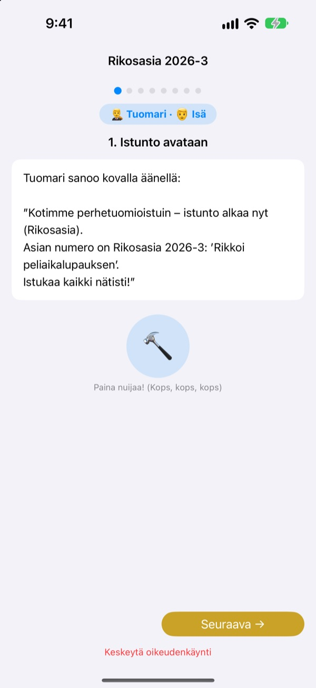
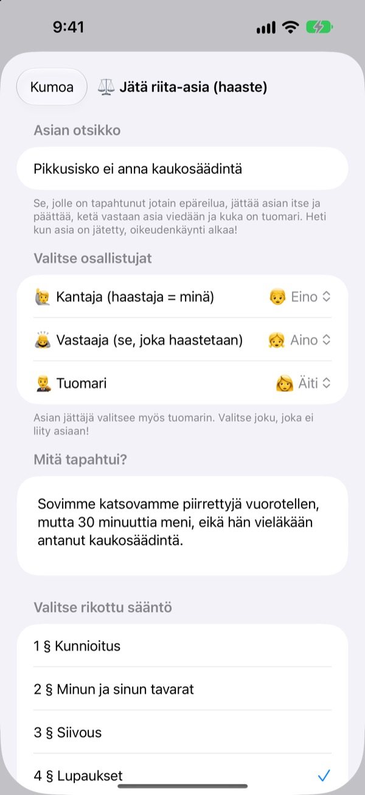
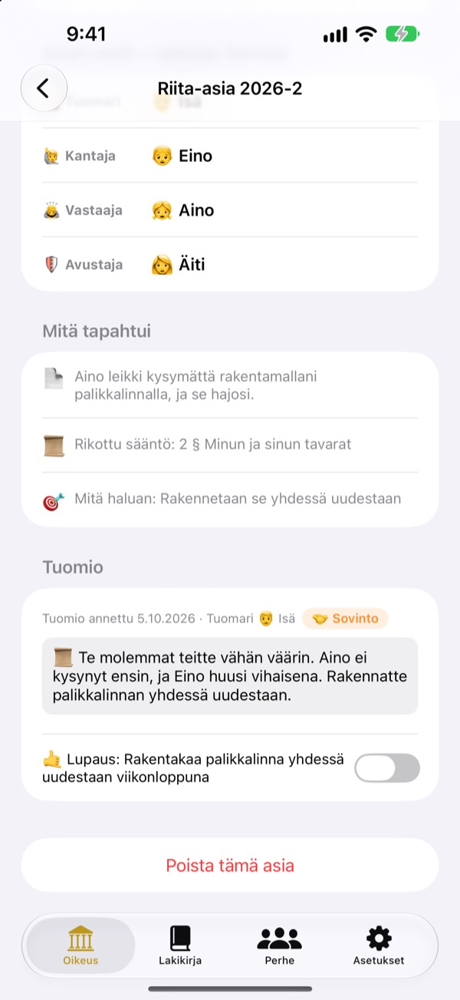
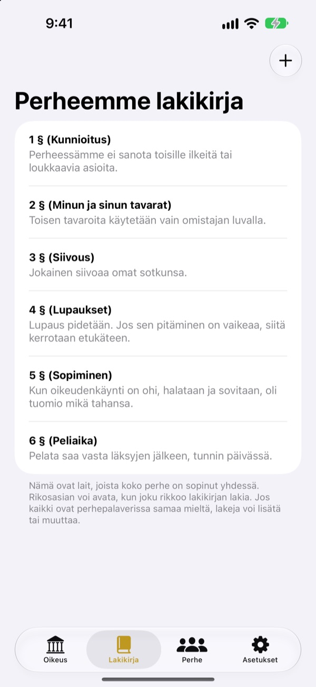

Epäreilua?
Ei kyyneliä, vaan oikeuteen.
Lapsi nostaa itse kanteen kantajana, ja perhe jakaa tuomarin ja asianajajan roolit. Käsikirjoitus kertoo joka vaiheessa, kenen vuoro on ja mitä sanotaan, joten jo ensimmäinen istunto sujuu kuin oikea.
Ei mainoksia, ostoja eikä rekisteröitymistä. Kaikki pysyy tällä laitteella.

Pidä istunto
Lyhyt juttu: ”Pikkuveli ei anna kaukosäädintä.” Vaihda sanataso ylhäältä, kopauta nuijaa ja käynnistä ajastin. Siitä lähtee ääntä, joten tarkista äänenvoimakkuus.
”Se alkoi!” Joko väsyttää olla aina erotuomari?
Kun riita syttyy, ratkaisun tekee melkein aina aikuinen. Häviäjä itkee, koska se tuntuu epäreilulta, eikä voittajakaan oikein tiedä, miksi voitti. Perheoikeus antaa lapsille järjestyksen: kerro oma puolesi loppuun asti ja kuuntele toinenkin loppuun. Ja tuomio päättyy lupaukseen, ei pelkkään rangaistukseen.
Vääryyttä kokenut nostaa kanteen itse
Joka kokee jonkin epäreiluksi, ryhtyy kantajaksi ja nostaa kanteen. Ketä vastaan ja kuka tuomitsee, päättää kantaja. Lapset voivat haastaa oikeuteen jopa äidin ja isän.
Näitkö jonkun rikkovan kodin sääntöä? Ryhdy syyttäjäksi ja nosta rikosjuttu. Tuomariksi kelpaa vain se, joka ei ole kantaja eikä vastaaja.

Tuomio päättyy lupaukseen
Tuomioon kuuluu lupaus tai rangaistus, joka kuitataan, kun se on hoidettu. Päättyneistä jutuista tulee perheenne ennakkotapauksia.
Ehdotetut rangaistukset alkavat asioiden korjaamisesta ja mielipahan hyvittämisestä, enemmän sovintoa kuin rangaistusta. Pelien tai television vähentäminen tulee viimeisenä.

Teidän kotinne, teidän lakinne
Kirjatkaa yhdessä sovitut säännöt pykäliksi, kuten kunnioitus, siivoaminen ja lupausten pitäminen, ja lisätkää tai muuttakaa niitä milloin vain. Kanteeseen valitaan rikottu laki.
”Tutustu oikeuteen” kertoo, mitä tuomari, kantaja, syyttäjä ja asianajaja tekevät ja miten oikeudenkäynti etenee.

Alkuun kolmessa vaiheessa
- 1
Lisää perhe
Nimi ja emoji riittävät. Tiliä ei tarvita.
- 2
Nosta juttu
Epäreilu asia on riita-asia, rikottu kodin sääntö rikosasia. Valitse sitten tuomari.
- 3
Avaa istunto
Seuraa käsikirjoitusta, pidä aika ajastimella ja julista tuomio nuijalla.
Sanat, jotka kasvavat lapsen mukana
- Tuomari
- Helppo: Erotuomari · Oikeussali: Puheenjohtaja
- Kantaja
- Helppo: Epäreilun kokenut · Oikeussali: Kantaja
- Vastaaja
- Helppo: Selittäjä · Oikeussali: Vastaaja
- Syyttäjä
- Helppo: Ilmoittaja · Oikeussali: Syyttäjä
- Syytetty
- Helppo: Selittäjä · Oikeussali: Syytetty
- Avustaja
- Helppo: Auttaja · Oikeussali: Avustaja
- Riita-asia
- Helppo: Epäreilua! · Oikeussali: Riita-asia
- Rikosasia
- Helppo: Rikottu lupaus · Oikeussali: Rikosasia
Valitse sanataso asetuksista, niin näytön ja käsikirjoituksen sanat vaihtuvat kerralla. Kokeile Helppoa päiväkoti-ikäisille ja Perusta koululaisille.
Usein kysyttyä
Minkä ikäisille?
Jokainen lukutaitoinen lapsi voi pelata vanhemman kanssa. Käsikirjoituksen, ohjeiden ja Helppo-sanatason avulla myös pienemmät pääsevät mukaan, kun aikuinen lukee ääneen.
Onko se oikeasti ilmainen?
On. Ei mainoksia eikä ostoja, jotka avaisivat toimintoja. Asetuksissa voi antaa vapaaehtoisen tipin kehittäjälle, mutta se ei avaa eikä lukitse mitään.
Tarvitaanko nettiä?
Ei. Istunnot ja arkisto toimivat täysin ilman yhteyttä. Netti ja iCloud-kirjautuminen tarvitaan vain palautteen lähettämiseen asetuksista.
Mihin tiedot tallentuvat?
Perhe, lait, istunnot ja tuomiot tallentuvat vain laitteelle eivätkä mene millekään palvelimelle. Kehittäjälle päätyy vain itse lähettämäsi palaute ja nimettömät käyttötilastot, joista sinua ei tunnista.
Voinko varmuuskopioida tai siirtää toiselle laitteelle?
”Tallenna arkisto” asetuksissa vie kaiken tiedostoon, ja ”Tuo arkisto” toisella laitteella palauttaa kaiken ennalleen. Myös vanhan verkkoversion varmuuskopiot voi tuoda.
Toimiiko iPadilla?
Toimii, sekä iPhonella että iPadilla. Iso näyttö on mainio, kun koko perhe istuu ympärillä.
Entä jos rangaistukset menevät liian koviksi?
Kun syyttäjä vaatii rangaistusta, käsikirjoitus muistuttaa, ettei se saa olla liian raskas ja että sen pitää olla toteutettavissa. Ehdotukset alkavat korjaamisesta: asian korjaaminen, mielipahan hyvittäminen ja toisen asemaan asettuminen.
Miten poistan kaiken?
Kun poistat apin, kaikki laitteen tiedot katoavat sen mukana. Mitään ei ole koskaan lähtenyt laitteelta, joten mitään ei jää muuallekaan. Jos haluat poistaa lähettämäsi palautteen, kirjoita meille.
Virheitä, ideoita tai jotain muuta? Kirjoita osoitteeseen leeo@kakao.com. Palautetta voi lähettää myös apin asetuksista.